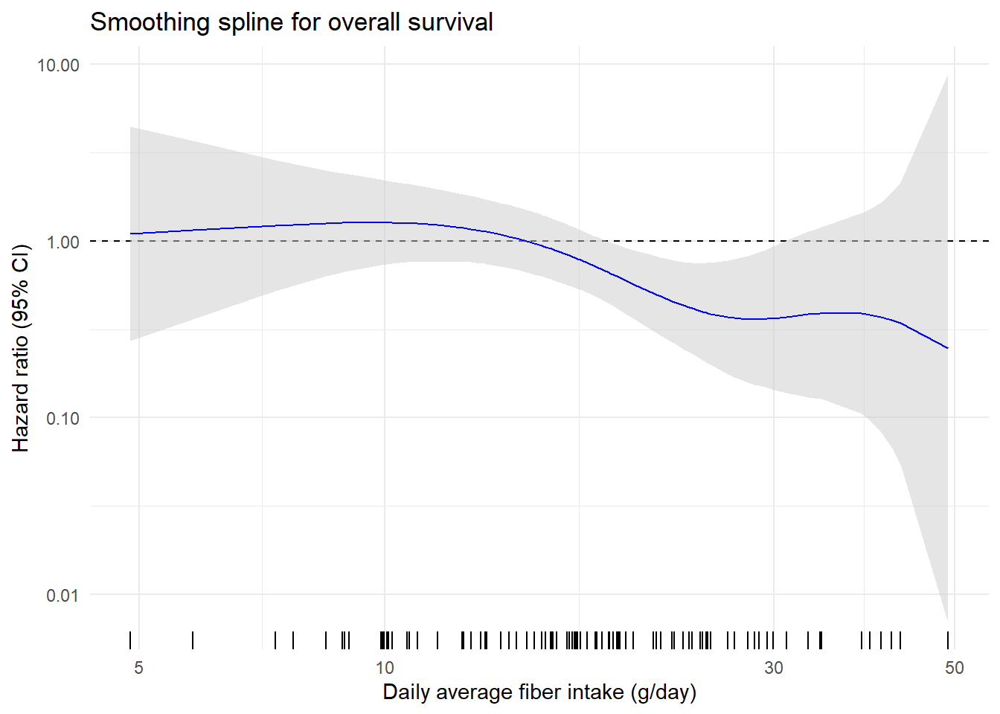
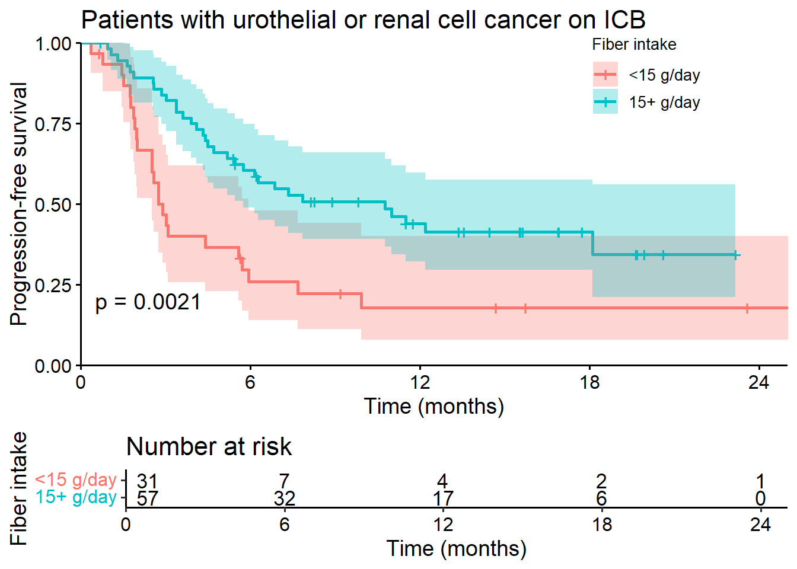
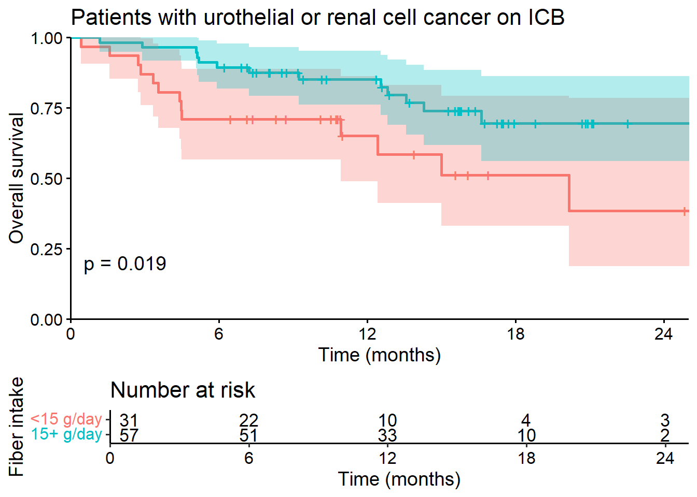
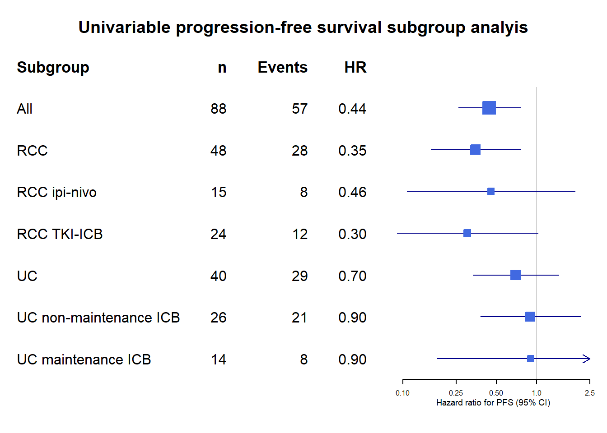

makeSpline(all_metadata_fiber, all_metadata_fiber$pfs_mo, all_metadata_fiber$pod_status,
all_metadata_fiber$aofib,
xlab = "Daily average fiber intake (g/day)", ylab="Hazard ratio (95% CI)",
title="Smoothing spline for progression-free survival",
knots=2,
centerpoint = 15)+
scale_x_log10() Figure 1 - Hazard Ratio Analysis of Fiber Intake
Figure 1 - Hazard Ratio Analysis of Fiber Intake
The data we are visualizing here has the following structure:
Panel B
Mortality Hazard for PFS by daily average fiber intake, visualized via partial smoothing spline. Ticks along the x axis represent individual patients.
Panel C
Mortality Hazard for OS by daily average fiber intake, visualized via partial smoothing spline. Ticks along the x axis represent individual patients.
makeSpline(all_metadata_fiber, all_metadata_fiber$os_mo, all_metadata_fiber$os_status,
all_metadata_fiber$aofib,
xlab = "Daily average fiber intake (g/day)", ylab="Hazard ratio (95% CI)",
title="Smoothing spline for overall survival",
knots=2,
centerpoint = 15) +
scale_x_log10()
Panel D
Kaplan-Meier PFS by daily average fiber intake, two groups >= 15 grams/day.
kmPFS<-survfit(Surv(pfs_mo, pod_status)~fiber_dichotomized,
type="kaplan-meier", data=all_metadata_fiber)
ggsurvplot(kmPFS,risk.table=TRUE,
xlab="Time (months)",
ylab="Progression-free survival",
pval = TRUE,
legend=c(0.8,0.9),
title="Patients with urothelial or renal cell cancer on ICB",
legend.title="Fiber intake",
legend.labs=c("<15 g/day","15+ g/day"),
#surv.median.line = "hv",
conf.int=TRUE,
break.x.by=6,
axes.offset=FALSE,
xlim=c(0,25),
data = all_metadata_fiber)
Panel E
Kaplan-Meier OS by daily average fiber intake, two groups >= 15 grams/day.
kmOS<-survfit(Surv(os_mo, os_status)~fiber_dichotomized,
type="kaplan-meier", data=all_metadata_fiber)
ggsurvplot(kmOS,risk.table=TRUE,
xlab="Time (months)",
ylab="Overall survival",
pval = TRUE,
legend="none",
title="Patients with urothelial or renal cell cancer on ICB",
legend.title="Fiber intake",
legend.labs=c("<15 g/day","15+ g/day"),
#surv.median.line = "hv",
conf.int=TRUE,
break.x.by=6,
axes.offset=FALSE,
xlim=c(0,25),
data = all_metadata_fiber)
Panel F
Univariate HRs for PFS among clinically relavant subgroups.
cox_pfs_all_uv <-coxph(Surv(pfs_mo,pod_status)~ fiber_dichotomized,
all_metadata_fiber)
summary(cox_pfs_all_uv)Call:
coxph(formula = Surv(pfs_mo, pod_status) ~ fiber_dichotomized,
data = all_metadata_fiber)
n= 88, number of events= 57
coef exp(coef) se(coef) z Pr(>|z|)
fiber_dichotomized -0.8190 0.4409 0.2730 -3 0.0027 **
---
Signif. codes: 0 '***' 0.001 '**' 0.01 '*' 0.05 '.' 0.1 ' ' 1
exp(coef) exp(-coef) lower .95 upper .95
fiber_dichotomized 0.4409 2.268 0.2582 0.7528
Concordance= 0.609 (se = 0.032 )
Likelihood ratio test= 8.47 on 1 df, p=0.004
Wald test = 9 on 1 df, p=0.003
Score (logrank) test = 9.49 on 1 df, p=0.002cox_pfs_RC <-coxph(Surv(pfs_mo,pod_status)~ fiber_dichotomized,
mRCdataFiber)
summary(cox_pfs_RC)Call:
coxph(formula = Surv(pfs_mo, pod_status) ~ fiber_dichotomized,
data = mRCdataFiber)
n= 48, number of events= 28
coef exp(coef) se(coef) z Pr(>|z|)
fiber_dichotomized -1.0541 0.3485 0.3945 -2.672 0.00754 **
---
Signif. codes: 0 '***' 0.001 '**' 0.01 '*' 0.05 '.' 0.1 ' ' 1
exp(coef) exp(-coef) lower .95 upper .95
fiber_dichotomized 0.3485 2.869 0.1608 0.7551
Concordance= 0.641 (se = 0.046 )
Likelihood ratio test= 6.46 on 1 df, p=0.01
Wald test = 7.14 on 1 df, p=0.008
Score (logrank) test = 7.8 on 1 df, p=0.005cox_pfs_RC_IpiNivo <-coxph(Surv(pfs_mo,pod_status)~ fiber_dichotomized,
dataRCIpiNivoFiber)
summary(cox_pfs_RC_IpiNivo)Call:
coxph(formula = Surv(pfs_mo, pod_status) ~ fiber_dichotomized,
data = dataRCIpiNivoFiber)
n= 15, number of events= 8
coef exp(coef) se(coef) z Pr(>|z|)
fiber_dichotomized -0.7864 0.4555 0.7387 -1.065 0.287
exp(coef) exp(-coef) lower .95 upper .95
fiber_dichotomized 0.4555 2.196 0.1071 1.937
Concordance= 0.627 (se = 0.094 )
Likelihood ratio test= 1.04 on 1 df, p=0.3
Wald test = 1.13 on 1 df, p=0.3
Score (logrank) test = 1.19 on 1 df, p=0.3cox_pfs_RC_TKI_IO <-coxph(Surv(pfs_mo,pod_status)~ fiber_dichotomized,
dataRCioTKIFiber)
summary(cox_pfs_RC_TKI_IO)Call:
coxph(formula = Surv(pfs_mo, pod_status) ~ fiber_dichotomized,
data = dataRCioTKIFiber)
n= 24, number of events= 12
coef exp(coef) se(coef) z Pr(>|z|)
fiber_dichotomized -1.1926 0.3034 0.6183 -1.929 0.0538 .
---
Signif. codes: 0 '***' 0.001 '**' 0.01 '*' 0.05 '.' 0.1 ' ' 1
exp(coef) exp(-coef) lower .95 upper .95
fiber_dichotomized 0.3034 3.295 0.09031 1.02
Concordance= 0.635 (se = 0.073 )
Likelihood ratio test= 3.16 on 1 df, p=0.08
Wald test = 3.72 on 1 df, p=0.05
Score (logrank) test = 4.17 on 1 df, p=0.04cox_pfs_UC <-coxph(Surv(pfs_mo,pod_status)~ fiber_dichotomized,
mUCdataFiber)
summary(cox_pfs_UC)Call:
coxph(formula = Surv(pfs_mo, pod_status) ~ fiber_dichotomized,
data = mUCdataFiber)
n= 40, number of events= 29
coef exp(coef) se(coef) z Pr(>|z|)
fiber_dichotomized -0.3570 0.6998 0.3787 -0.943 0.346
exp(coef) exp(-coef) lower .95 upper .95
fiber_dichotomized 0.6998 1.429 0.3332 1.47
Concordance= 0.539 (se = 0.05 )
Likelihood ratio test= 0.87 on 1 df, p=0.3
Wald test = 0.89 on 1 df, p=0.3
Score (logrank) test = 0.9 on 1 df, p=0.3cox_pfs_UC_NOTavelumab <-coxph(Surv(pfs_mo,pod_status)~ fiber_dichotomized,
dataUC_NOTavelumab)
summary(cox_pfs_UC_NOTavelumab)Call:
coxph(formula = Surv(pfs_mo, pod_status) ~ fiber_dichotomized,
data = dataUC_NOTavelumab)
n= 26, number of events= 21
coef exp(coef) se(coef) z Pr(>|z|)
fiber_dichotomized -0.1107 0.8952 0.4417 -0.251 0.802
exp(coef) exp(-coef) lower .95 upper .95
fiber_dichotomized 0.8952 1.117 0.3767 2.128
Concordance= 0.491 (se = 0.067 )
Likelihood ratio test= 0.06 on 1 df, p=0.8
Wald test = 0.06 on 1 df, p=0.8
Score (logrank) test = 0.06 on 1 df, p=0.8cox_pfs_UC_avelumab <-coxph(Surv(pfs_mo,pod_status)~ fiber_dichotomized,
dataUCavelumab)
summary(cox_pfs_UC_avelumab)Call:
coxph(formula = Surv(pfs_mo, pod_status) ~ fiber_dichotomized,
data = dataUCavelumab)
n= 14, number of events= 8
coef exp(coef) se(coef) z Pr(>|z|)
fiber_dichotomized -0.1060 0.8994 0.8239 -0.129 0.898
exp(coef) exp(-coef) lower .95 upper .95
fiber_dichotomized 0.8994 1.112 0.1789 4.521
Concordance= 0.527 (se = 0.091 )
Likelihood ratio test= 0.02 on 1 df, p=0.9
Wald test = 0.02 on 1 df, p=0.9
Score (logrank) test = 0.02 on 1 df, p=0.9forestplot_data <- tibble::tibble(mean = c(0.4409,0.3485, 0.4555, 0.3034, 0.6998, 0.8952, 0.8994),
lower = c(0.2582,0.1608, 0.1071, 0.09031, 0.3332, 0.3767, 0.1789),
upper = c(0.7528,0.7551, 1.937, 1.02, 1.47, 2.128, 4.521),
study = c("All","RCC", "RCC ipi-nivo", "RCC TKI-ICB",
"UC", "UC non-maintenance ICB", "UC maintenance ICB"),
n = c("88","48","15","24","40","26","14"),
events = c("57","28","8","12","29","21","8"),
HR = c("0.44","0.35", "0.46", "0.30", "0.70", "0.90", "0.90"))
forestplot_data |>
forestplot(labeltext = c(study, n, events, HR),
clip = c(0.09, 2.5),
xlog = TRUE,
xlab = "Hazard ratio for PFS (95% CI)",
xticks = c(0.1,0.25,0.5,1.0,2.5),
title = "Univariable progression-free survival subgroup analyis") |>
fp_set_style(box = "royalblue",
line = "darkblue",
summary = "royalblue") |>
fp_add_header(study = c("Subgroup"),
n = c("n"),
events = c("Events"),
HR = c("HR")) 
Panel G
Multivariate HR for PFS adjusted for age, diagnosis, and performance status.
cox_pfs_all <-coxph(Surv(pfs_mo,pod_status)~ fiber_dichotomized + ageby10 + ecog_1to5_final,
all_metadata_fiber)
summary(cox_pfs_all)Call:
coxph(formula = Surv(pfs_mo, pod_status) ~ fiber_dichotomized +
ageby10 + ecog_1to5_final, data = all_metadata_fiber)
n= 88, number of events= 57
coef exp(coef) se(coef) z Pr(>|z|)
fiber_dichotomized -0.9038 0.4050 0.2891 -3.126 0.00177 **
ageby10 0.3582 1.4308 0.1376 2.604 0.00922 **
ecog_1to5_final 0.3765 1.4571 0.3301 1.140 0.25417
---
Signif. codes: 0 '***' 0.001 '**' 0.01 '*' 0.05 '.' 0.1 ' ' 1
exp(coef) exp(-coef) lower .95 upper .95
fiber_dichotomized 0.405 2.4690 0.2298 0.7138
ageby10 1.431 0.6989 1.0926 1.8737
ecog_1to5_final 1.457 0.6863 0.7629 2.7830
Concordance= 0.659 (se = 0.041 )
Likelihood ratio test= 18.25 on 3 df, p=4e-04
Wald test = 17.7 on 3 df, p=5e-04
Score (logrank) test = 18.41 on 3 df, p=4e-04cox_pfs_RC <-coxph(Surv(pfs_mo,pod_status)~ fiber_dichotomized + ageby10 + ecog_1to5_final,
mRCdataFiber)
summary(cox_pfs_RC)Call:
coxph(formula = Surv(pfs_mo, pod_status) ~ fiber_dichotomized +
ageby10 + ecog_1to5_final, data = mRCdataFiber)
n= 48, number of events= 28
coef exp(coef) se(coef) z Pr(>|z|)
fiber_dichotomized -1.1441 0.3185 0.4488 -2.549 0.01079 *
ageby10 0.5361 1.7093 0.2011 2.666 0.00769 **
ecog_1to5_final 0.5315 1.7015 0.4766 1.115 0.26483
---
Signif. codes: 0 '***' 0.001 '**' 0.01 '*' 0.05 '.' 0.1 ' ' 1
exp(coef) exp(-coef) lower .95 upper .95
fiber_dichotomized 0.3185 3.1396 0.1322 0.7676
ageby10 1.7093 0.5850 1.1525 2.5352
ecog_1to5_final 1.7015 0.5877 0.6685 4.3306
Concordance= 0.727 (se = 0.048 )
Likelihood ratio test= 15.03 on 3 df, p=0.002
Wald test = 15.1 on 3 df, p=0.002
Score (logrank) test = 16.22 on 3 df, p=0.001cox_pfs_RC_IpiNivo <-coxph(Surv(pfs_mo,pod_status)~ fiber_dichotomized+ ageby10 + ecog_1to5_final,
dataRCIpiNivoFiber)
summary(cox_pfs_RC_IpiNivo)Call:
coxph(formula = Surv(pfs_mo, pod_status) ~ fiber_dichotomized +
ageby10 + ecog_1to5_final, data = dataRCIpiNivoFiber)
n= 15, number of events= 8
coef exp(coef) se(coef) z Pr(>|z|)
fiber_dichotomized -1.9978 0.1356 1.0827 -1.845 0.0650 .
ageby10 1.6818 5.3750 0.7495 2.244 0.0248 *
ecog_1to5_final 0.4927 1.6367 0.9073 0.543 0.5871
---
Signif. codes: 0 '***' 0.001 '**' 0.01 '*' 0.05 '.' 0.1 ' ' 1
exp(coef) exp(-coef) lower .95 upper .95
fiber_dichotomized 0.1356 7.373 0.01625 1.132
ageby10 5.3750 0.186 1.23717 23.352
ecog_1to5_final 1.6367 0.611 0.27651 9.688
Concordance= 0.81 (se = 0.092 )
Likelihood ratio test= 8.69 on 3 df, p=0.03
Wald test = 5.88 on 3 df, p=0.1
Score (logrank) test = 7.16 on 3 df, p=0.07cox_pfs_RC_TKI_IO <-coxph(Surv(pfs_mo,pod_status)~ fiber_dichotomized+ ageby10 + ecog_1to5_final,
dataRCioTKIFiber)
summary(cox_pfs_RC_TKI_IO)Call:
coxph(formula = Surv(pfs_mo, pod_status) ~ fiber_dichotomized +
ageby10 + ecog_1to5_final, data = dataRCioTKIFiber)
n= 24, number of events= 12
coef exp(coef) se(coef) z Pr(>|z|)
fiber_dichotomized -0.5312 0.5879 0.7341 -0.724 0.4693
ageby10 0.3140 1.3689 0.4844 0.648 0.5168
ecog_1to5_final 1.8411 6.3036 0.8549 2.154 0.0313 *
---
Signif. codes: 0 '***' 0.001 '**' 0.01 '*' 0.05 '.' 0.1 ' ' 1
exp(coef) exp(-coef) lower .95 upper .95
fiber_dichotomized 0.5879 1.7009 0.1395 2.479
ageby10 1.3689 0.7305 0.5297 3.538
ecog_1to5_final 6.3036 0.1586 1.1801 33.671
Concordance= 0.754 (se = 0.066 )
Likelihood ratio test= 9.31 on 3 df, p=0.03
Wald test = 6.94 on 3 df, p=0.07
Score (logrank) test = 9.12 on 3 df, p=0.03cox_pfs_UC <-coxph(Surv(pfs_mo,pod_status)~ fiber_dichotomized+ ageby10 + ecog_1to5_final,
mUCdataFiber)
summary(cox_pfs_UC)Call:
coxph(formula = Surv(pfs_mo, pod_status) ~ fiber_dichotomized +
ageby10 + ecog_1to5_final, data = mUCdataFiber)
n= 40, number of events= 29
coef exp(coef) se(coef) z Pr(>|z|)
fiber_dichotomized -0.42328 0.65490 0.39185 -1.080 0.280
ageby10 0.15310 1.16544 0.18707 0.818 0.413
ecog_1to5_final -0.05191 0.94942 0.49855 -0.104 0.917
exp(coef) exp(-coef) lower .95 upper .95
fiber_dichotomized 0.6549 1.527 0.3038 1.412
ageby10 1.1654 0.858 0.8077 1.682
ecog_1to5_final 0.9494 1.053 0.3573 2.522
Concordance= 0.537 (se = 0.07 )
Likelihood ratio test= 1.61 on 3 df, p=0.7
Wald test = 1.54 on 3 df, p=0.7
Score (logrank) test = 1.56 on 3 df, p=0.7cox_pfs_UC_NOTavelumab <-coxph(Surv(pfs_mo,pod_status)~ fiber_dichotomized+ ageby10 + ecog_1to5_final,
dataUC_NOTavelumabFiber)
summary(cox_pfs_UC_NOTavelumab)Call:
coxph(formula = Surv(pfs_mo, pod_status) ~ fiber_dichotomized +
ageby10 + ecog_1to5_final, data = dataUC_NOTavelumabFiber)
n= 26, number of events= 21
coef exp(coef) se(coef) z Pr(>|z|)
fiber_dichotomized 0.3584 1.4311 0.5299 0.676 0.499
ageby10 -0.1427 0.8670 0.2760 -0.517 0.605
ecog_1to5_final -1.0023 0.3670 0.6821 -1.469 0.142
exp(coef) exp(-coef) lower .95 upper .95
fiber_dichotomized 1.431 0.6988 0.50655 4.043
ageby10 0.867 1.1534 0.50474 1.489
ecog_1to5_final 0.367 2.7245 0.09641 1.397
Concordance= 0.634 (se = 0.069 )
Likelihood ratio test= 3.95 on 3 df, p=0.3
Wald test = 4.34 on 3 df, p=0.2
Score (logrank) test = 4.68 on 3 df, p=0.2cox_pfs_UC_avelumab <-coxph(Surv(pfs_mo,pod_status)~ fiber_dichotomized+ ageby10 + ecog_1to5_final,
dataUCavelumabFiber)
summary(cox_pfs_UC_avelumab)Call:
coxph(formula = Surv(pfs_mo, pod_status) ~ fiber_dichotomized +
ageby10 + ecog_1to5_final, data = dataUCavelumabFiber)
n= 14, number of events= 8
coef exp(coef) se(coef) z Pr(>|z|)
fiber_dichotomized -4.907e-01 6.122e-01 9.281e-01 -0.529 0.597
ageby10 3.708e-01 1.449e+00 3.681e-01 1.007 0.314
ecog_1to5_final 2.028e+01 6.449e+08 1.626e+04 0.001 0.999
exp(coef) exp(-coef) lower .95 upper .95
fiber_dichotomized 6.122e-01 1.633e+00 0.09928 3.775
ageby10 1.449e+00 6.902e-01 0.70419 2.981
ecog_1to5_final 6.449e+08 1.551e-09 0.00000 Inf
Concordance= 0.662 (se = 0.124 )
Likelihood ratio test= 6.44 on 3 df, p=0.09
Wald test = 1.02 on 3 df, p=0.8
Score (logrank) test = 4.05 on 3 df, p=0.3forestplot_data <- tibble::tibble(mean = c(0.405, 0.3185, 0.6549),
lower = c(0.2298, 0.1322, 0.3038),
upper = c(0.7138, 0.7676, 1.412),
study = c("All", "RCC", "UC"),
n = c("88","48","40"),
events = c("57","28","29"),
HR = c("0.41","0.32","0.65"))
forestplot_data |>
forestplot(labeltext = c(study, n, events, HR),
clip = c(0.09, 2.5),
xlog = TRUE,
xlab = "Hazard ratio for PFS (95% CI)",
xticks = c(0.1,0.25,0.5,1.0,2.5),
title = "Multivariable progression-free survival subgroup analyis") |>
fp_set_style(box = "royalblue",
line = "darkblue",
summary = "royalblue") |>
fp_add_header(study = c("Subgroup"),
n = c("n"),
events = c("Events"),
HR = c("HR"))